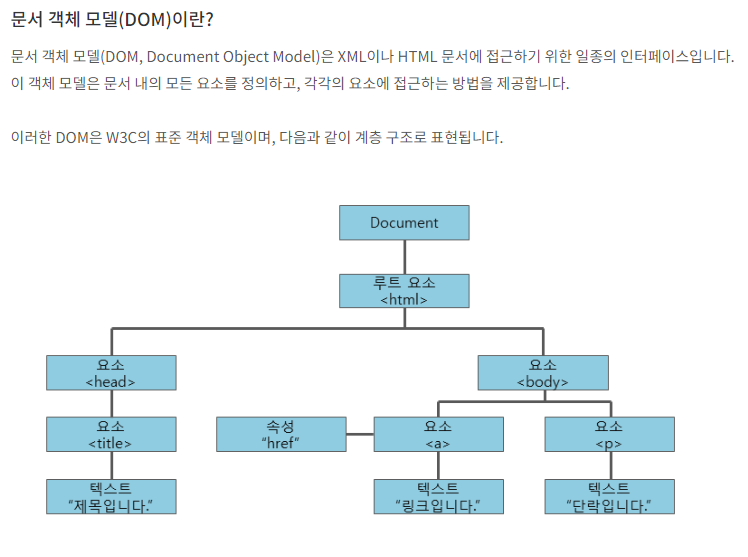
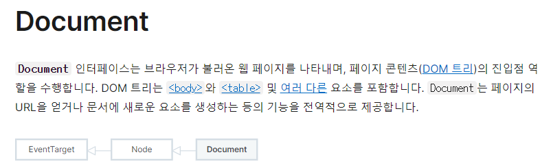
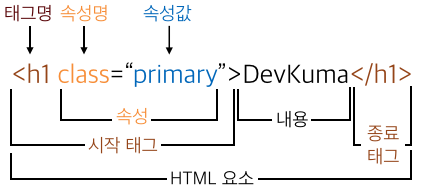

- 돔의 이해 : HTML문서를 작성하고, 브라우저가 HTML문서를 읽어들인 후 자바스크립트에서 쓰일수 있도록 트리구조화 한 인터페이스
- console.log(document)
- 요소 선택자( id, name, tag name, class)
- 요소 선택자 아이디로 접근(1개) - document.getElementById('id')
- 요소 선택자 속성명 name으로 접근(n개) - document.getElementsByName('name')
- 요소 선택자 태그명으로 접근(n개) - document.getElementsByTagName('div')
- 요소 선택자 클래스로 접근(n개) - document.getElementById('id')
- 요소 선택자 모두 접근가능 (1개) - document.querySelector(선택자)
- 클래스로 접근 : document.querySelector('.class')
- 아이디로 접근 : document.querySelector('#id')
- 태그명 접근 : document.querySelector('div')
- 자식 접근 : document.querySelector('#id > .class')
- 요소 선택자 모두 접근가능 (n개) - document.querySelectorAll(선택자)
- 클래스로 접근 : document.querySelectorAll('.class')
- 아이디로 접근 : document.querySelectorAll('#id')
- 태그명 접근 : document.querySelectorAll('div')
- 자식 접근 : document.querySelectorAll('#id > .class')
- 선택자에 클래스 읽기, 추가, 수정, 삭제, toggle
- 클래스 문자열로 읽기 : 선택자.classList
- 클래스 nodeList 총 갯수 읽기 :선택자.classList.length
- 클래스 1개씩 읽기 : for문 안에서, 선택자.classList.item(i)
- 클래스 추가 : 선택자.classList.add('클래스명')
- 클래스 추가(n개) : 선택자.classList.add('클래스명1','클래스명2')
- 클래스 변경 : 선택자.classList.replace('클래스명1','클래스명2')
- 클래스 삭제 : 선택자.classList.remove('클래스명1','클래스명2')
- 클래스 토글 (토글은 클래스가 있으면 없애고, 없으면 있게 하는게 toggle) : 선택자.classList.toggle('클래스명')
- 클래스 포함여부확인 return boolean : 선택자.classList.contain('클래스명')
- 선택자에 style 읽기, 쓰기/변경
- style 읽기 : 선택자.style.color
- style 쓰기/변경 : 선택자.style.color = 'red';
- style 한꺼번에 쓰기(기존 style 모두 삭제 후, 다시 작성됨) : 선택자.style.cssText = 'border:1px solid red;color;blue';
- 참고 : https://developer.mozilla.org/ko/docs/Web/API/Document